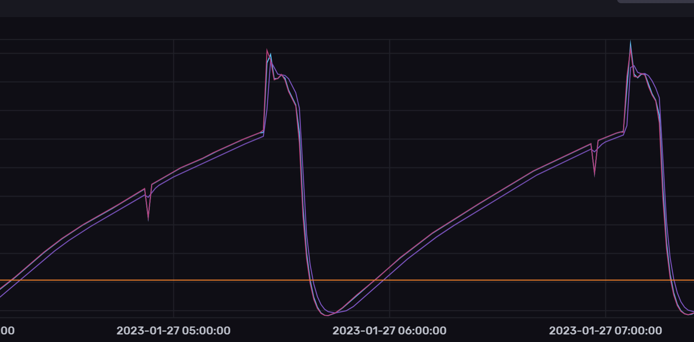
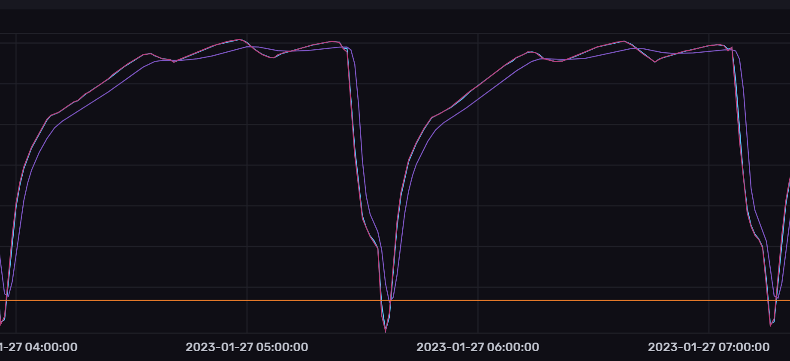

Welcome to KegMon - Keg Level Monitor#
Note
Reflects version v1.3.0, Last updated 2026-10-26
Introduction#
The software is tailored towards my personal needs and external services that I use, but suggestions are always welcome.
The software has two interfaces, displays and web browser. It integrates with Home Assistant, Brewfather, BrewSpy, BrewLogger, BrewGraph, Barhelper, InfluxDB v2, and Chamber Controller temperature sources. The available features differ by service.
The cheap load cells are quite unpredicteble so it’s hard to get a fully accurate and stable system. In order to compensate for this I have built in the possibility to add filters and clean up the values, these filters include:
raw average (makes an average over the last 10 readings)
kalman (smooths out the peaks readings, but slows down level detection)
optional temperature adjustment using a formula for each scale
Here are two views on the data change over time, the temperature in my keezer is between 4 and 5 degress Celcius. My two scales behave diffrently even though the load cells are from the same batch. I guess that the peak in the first graph is due to interference from the compressor when it starts to cool. The orange line shows the stable level that is used. Level change is triggered by a change up or down of more than the threasholds. In the image below the peak is approx 16-20 cl above the stable level, so its not a big difference.




Since the level will vary slightly based on the temperature (on my scale +0.04 to -0.01 kg), I have added a level detection algorithm that uses the average level over time and dont adjust unless the delta is larger than the defined threasholds (can be set in configuration).
To accept a new level, raw and Kalman-filtered values must be sufficiently aligned and enough readings must accumulate according to the configured stability count. A pour is detected when the stable weight decreases beyond the configured decrease threshold. These settings determine the minimum detectable change and response time; there is no fixed 10 cl cutoff or fixed 40-second settling period. Several quick pours can be recorded as one larger pour if the scale does not settle between them.
The design is created for 2 kegs but it will work if you only use one (make sure to use the pins for scale 1 in that case).
The displays will show the name of the beer, abv and alternate between weight and pours. The first screen will display values for keg 1 and the second for keg 2.
The values presented on the displays is the raw values so that you can see directly if the level changes. Stable values can be screen at the web UI or via the external integrations.
The software will automatically detect how many sensor boards are connected and if there is a temperature sensor.
The project contains the following parts:
Software that manage the scale and present the readings
Hardware design based on standard HX711 AD converter with load cells and temperature sensor
3D models for the base
3D models for display case
Help wanted#
I have not had the possibility to test / validate all the options so any feedback and updates to the documentation is appreciated.
Topics that need verification:
Using BME280 in a scale base to measure temperature
Using NAU7802 ADC to measure weight
Hardware options#
Display#
For display there are two options that can be used:
OLED 0.96” display based on SH1106
LED display based on PCF8574, both 20x4 and 20x2 displays can be used.
The OLED 0.96” display is the option that is the primary option used in the design.
There are larger OLED displays that could be used, but most of these dont have the option to change I2C adress so this would require a different hardware design.
ADC#
For ADC there are a few options available:
HX711 based boards (3 main options, green, purple and red boards)
NAU7802 requires a differnt hardware wiring. NAU782 uses I2C communication and for two scales an ESP32S2/S3 is required.
The HX711 purple board is the primary option used in the design. The green board has a different pin configuration.
Temperature sensor#
For temperature sensor you can use:
DS18B20, one wire sensor
DHT22, one wire sensor
BME280, i2c sensor. This option require a different wiring
The DS18B20 temperature sensor is the primary option.
Credits to#
Thanks to the following projects.